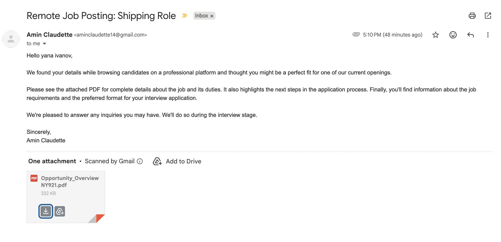

From Synthetic Tests
to Real Malware
Lab 010 documented how Ladon was built — the detection modules, the architecture decisions, the scoring logic. It ended with a straightforward observation: synthetic test files tell you the code runs. Real malware tells you the detection logic actually works. This lab is that test.
The five samples analyzed here were sourced from MalwareBazaar and one live phishing attempt that arrived in my own inbox. All five are PDFs. All five triggered Ladon's polyglot detection module. None of them were safe to open.
The goal of this lab is not to reverse-engineer the malware — Ladon is a triage tool, not a malware analysis platform. The goal is to document what the tool found, what those findings mean, and what would have happened to a non-technical user who opened any of these files.
On sample handling: All analysis was performed using Ladon's static analysis engine. No file was executed, opened in a PDF viewer, or processed by any renderer. Ladon reads raw bytes only. Four samples were sourced from MalwareBazaar. One arrived as a live phishing email. Hashes are included for reference. The files themselves are not distributed.
The Samples — What Ladon Found
Each sample is presented with its Ladon report findings, what those findings mean in practice, and what a non-technical user would have experienced if they had opened the file.
/ObjStm suggest the author understood how common scanners work and built around their limitations. Attribution unknown; technique deliberate.
.msi and .exe hosted on Tencent Cloud, active at time of analysis. The PDF embeds direct links to secondary stage payloads on cos.ap-guangzhou.myqcloud.com (Tencent Cloud Object Storage, Guangzhou region), including lnstaller.msi — note the deliberate misspelling of "installer" to evade string-based detection — and 24-12-13uninstall.exe. These URLs were live and resolving at the time of analysis. Opening the PDF would have fetched and executed these payloads automatically.24-12-13 — December 13, 2024) dates the campaign to late 2024. The deliberate misspelling of "installer" is a common string-evasion technique. A user who opened this file would have immediately beaconed to the attacker's infrastructure across 20 URI callbacks, then had two additional executables silently fetched and staged for execution — all before seeing any document content.
/AA key triggers code execution automatically on page open, page close, or document print — no user interaction required beyond opening the file. Six occurrences across the document means multiple trigger points. Code fires the moment the PDF renders.maneger-accouintr-solutieonst.site — Deliberate misspelling of "manager account solutions" on a .site TLD. A throwaway phishing domain designed to pass a visual scan. The .site TLD is inexpensive, disposable, and commonly associated with credential harvesting infrastructure./AA actions; and (3) had the embedded PE staged for extraction. The typosquatted domain would have been the landing page for harvested credentials. All before reading a word of the document.
MZ header) embedded inside a structurally valid PDF. Opens and renders normally in any viewer. No file extension or header-only scanner will find the payload.The social engineering is textbook: unsolicited job offer, professional framing, name personalization, urgent next steps in an attachment. A job seeker who opened this file would have executed a Windows PE payload with no warning and no visible indication that anything had happened. This is the sample that validated the intended use case for Ladon — a real phishing email, a real target, a payload that passed Gmail. Ladon caught it on first scan.

The Pattern Across All Five
Every sample in this set is a polyglot. That is not a coincidence — it is a reflection of how effective the technique is. A PDF that contains a Windows PE executable will pass file extension checks (it ends in .pdf), pass magic byte checks (the first four bytes are %PDF), open normally in any PDF viewer, and show readable content to the recipient. The executable is not visible. It makes no noise. The only way to find it is to scan the entire file for secondary signatures — which is exactly what Ladon does.
| Sample | Attribution | Severity | PE Offset | Additional Findings |
|---|---|---|---|---|
| d67e62bb… Unknown dropper |
Unknown | HIGH | 36,700 | /ObjStm — hides objects from scanners |
| e2b75bae… ValleyRAT / SilverFox |
Chinese APT | CRITICAL | 4,937 | /URI ×20, live Tencent Cloud .msi + .exe C2 |
| b046d04b… Facebook phishing |
Unknown | CRITICAL | 18,238 | /AA ×6 auto-execute, /URI ×4, typosquatted .site domain |
| 5095c647… Gamaredon loader |
Russian APT (FSB) | HIGH | 18,385 | None — clean PDF layer |
| Opportunity_ Job scam · live catch |
Unknown | HIGH | 10,303 | None — clean PDF layer |
Three of the five samples would have been entirely missed by a scanner that only checks PDF structure. Two would have been partially flagged — the auto-execute actions and suspicious URLs in samples 2 and 3 would have triggered something. But the embedded executable in every case would have gone undetected without a full-file secondary signature scan.
On the clean PDF layer in samples 4 and 5: The absence of active PDF content is worth noting. An attacker who embeds a PE executable and adds no JavaScript, no auto-execute actions, and no suspicious URLs produces a file that is specifically harder to detect — it generates no behavioral signals, no network callbacks, nothing that heuristics can catch. The payload is inert inside the PDF until it is extracted and run by whatever mechanism the attacker has arranged. Cleaner PDF structure is not a sign of a less dangerous file. The Gamaredon sample makes this point with state-sponsored precision — the lure does not need to be sophisticated if the target opens it.
What This Validates About Ladon
The detection methodology in Ladon was built from reading threat reports and file format specifications. These five samples are the first test against files that weren't constructed to test the tool. The results hold.
Every sample triggered the polyglot detection module correctly. The severity scoring separated the two CRITICAL samples — ValleyRAT and the Facebook phishing file, both with multiple compounding findings — from the three HIGH samples where the polyglot was the only or primary finding. The URL analysis module correctly flagged the live Tencent Cloud C2 URLs in sample 2 and the typosquatted domain in sample 3. The PDF structure module correctly identified the auto-execute actions in sample 3 and the object stream obfuscation in sample 1 — the unknown dropper.
The live phishing sample — the job scam that arrived in my inbox — is the most meaningful data point. It was not sourced from a malware repository. It was not constructed to test anything. It was a real phishing email sent to a real target. Gmail did not flag the attachment. Ladon caught the embedded PE at offset 10,303 on the first scan.
The intended use case, validated: Ladon was designed for a specific scenario — a non-technical employee at a defense contractor or small business who receives an unexpected PDF and has no way to know if it is safe to open. The job scam email is exactly that scenario. The file looked like a PDF, opened like a PDF, and passed Gmail's scanner. The only thing that identified it as malicious was reading the raw bytes — which is exactly what Ladon does, automatically, before anyone opens anything.